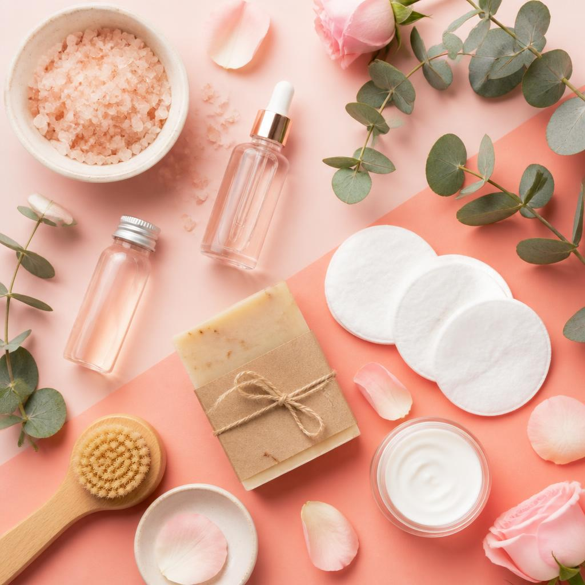
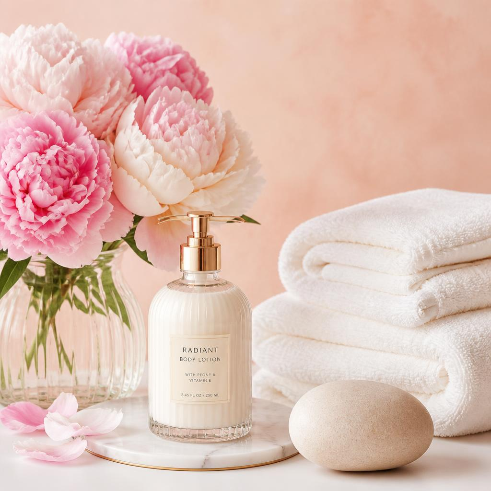

"El arte de cuidarte"


"El arte de cuidarte"



Mantener una buena higiene, alimentarse de forma equilibrada, realizar actividad física y descansar adecuadamente son hábitos importantes para cuidar nuestro cuerpo.
Reconocer nuestras emociones, expresar lo que sentimos y hablar con personas de confianza puede ayudarnos a manejar situaciones difíciles.
Tomarse momentos para descansar, relajarse, disfrutar de nuestros hobbies y desconectarnos de las responsabilidades también forma parte del cuidado personal.
Durante la juventud se empiezan a desarrollar muchos de los hábitos que pueden acompañarnos durante la vida adulta. Aprender a cuidar nuestro cuerpo y nuestra mente puede ayudarnos a tener una mejor relación con nosotros mismos.
💗 Escucha tu cuerpo: presta atención a tus necesidades y respeta las señales que te da tu cuerpo.
🌙 Descansa: procura mantener buenos hábitos de sueño y date momentos para descansar durante el día.
🥗 Alimentación: procura mantener una alimentación variada y equilibrada que aporte los nutrientes que tu cuerpo necesita.
🏃 Muévete: realizar actividad física de forma regular puede contribuir a mantener un cuerpo activo y saludable.
🧠 Habla sobre tus emociones: no tienes que guardar todo lo que sientes. Hablar con alguien de confianza puede ayudarte.
📱 Cuida tu relación con las redes sociales: recuerda que las imágenes que ves en internet no siempre representan la realidad.
💬 Aprende a poner límites: decir "no" cuando algo te incomoda también es una manera de respetarte y cuidarte.
🤝 Pide ayuda cuando la necesites: buscar apoyo no es una señal de debilidad. Es una forma responsable de cuidar de ti.